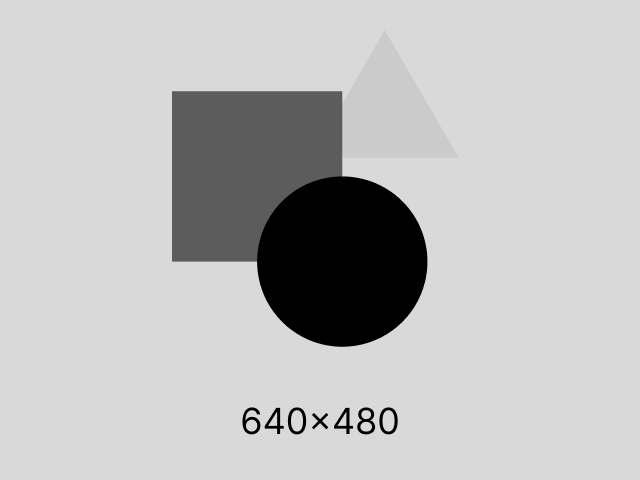

Expertise Totale
Log Technique (High)
Une immersion totale dans chaque micro-étape de la production, de 09h00 à 19h00.

09:00
Ouverture & Set-up
Démarrage de la station de travail et vérification des backups.
09:15Check-list matériel.
09:30Mise à jour des librairies.
09:45Tests de connexion serveur.
10:00
Conception Pixel Art
Début du traçage des vecteurs principaux.
10:15Ajustement du canevas.
10:30Sélection de la gamme de perles.
10:45Premier rendu basse définition.
11:00
Architecture UX/UI
Structuration des blocs et des flux de navigation.
11:15Wireframing des sections.
11:30Tests de lisibilité.
11:45Validation des espacements.
12:00
Pause & Backup
Interruption de session et synchronisation cloud.
12:15Nettoyage du cache.
12:30Revue des logs matinaux.
12:45Préparation production après-midi.
13:00
Assemblage Matière
Travail sur le relief et la texture des perles.
13:15Positionnement des ombres.
13:30Calcul de la luminance.
13:45Rendu haute précision.
14:00
Intégration Code
Développement CSS et structures HTML5.
14:15Nettoyage des classes.
14:30Optimisation des imports.
14:45Vérification de la cascade.
15:00
Logique Interactive
Développement des scripts JS et des observers.
15:15Debug console.
15:30Test des seuils d'intersection.
15:45Ajustement des transitions.
16:00
Tests & Debug
Vérification de la robustesse globale.
16:15Test mobile (Chrome DevTools).
16:30Validation W3C.
16:45Optimisation performance.
17:00
Revue Client
Présentation de l'état d'avancement technique.
17:15Upload sur serveur de test.
17:30Briefing retours utilisateur.
17:45Arbitrage priorités.
18:00
Finalisation & Exports
Préparation de la livraison finale.
18:15Minification des sources.
18:30Génération de la documentation.
18:45Dernier commit Git.
19:00
Archive & Clôture
Sécurisation des données et extinction de la session.
19:15Archive ZIP client.
19:30Nettoyage espace disque.
19:45Validation clôture.